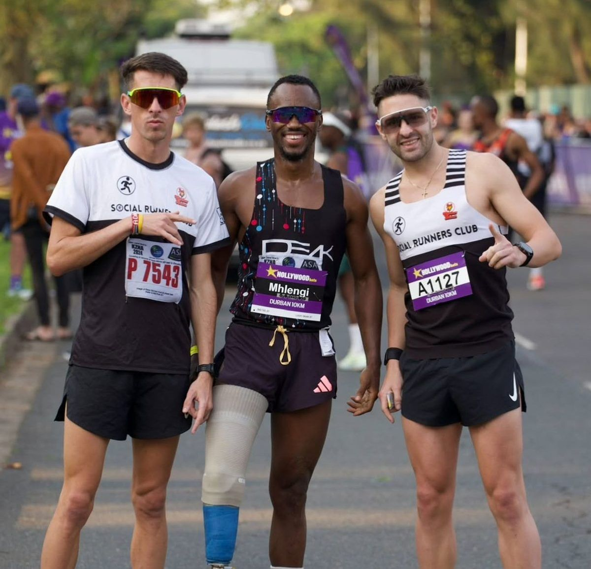
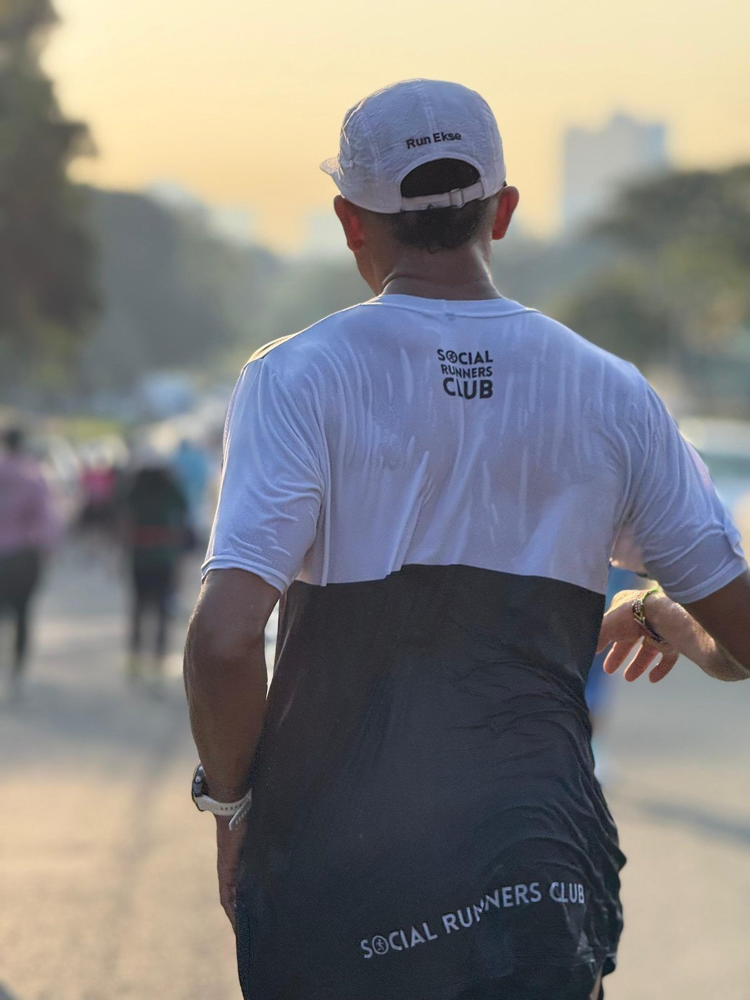
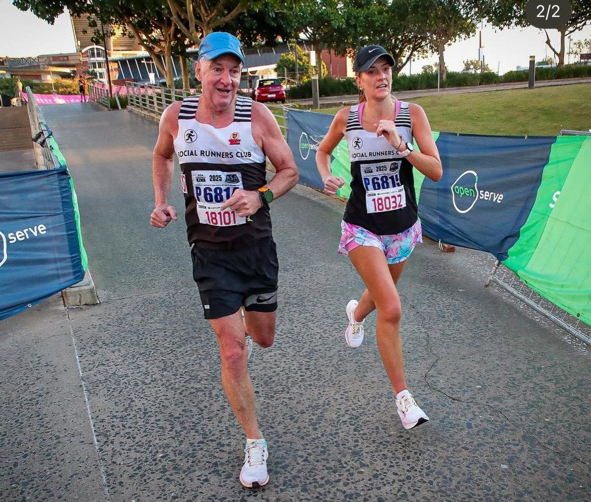

The Social Runners Club is a vibrant community based in Durban, South Africa. Our club welcomes runners of all levels, from beginners to seasoned athletes. We believe in the power of running to bring people together, fostering friendships, and promoting a healthy lifestyle.
Our story began with a small group of enthusiasts who wanted to make running more social and enjoyable. Over the years, we have grown into a larger community hosting regular meetups, official races, and offering exclusive merchandise. Our club is about more than just running; it's about building connections and having fun.
We are committed to providing a supportive environment where everyone feels welcome. Our values are rooted in inclusivity, community spirit, and a passion for running. Join us for a run and become part of something special!
Explore the vibrant activities and exclusive offerings of the Social Runners Club.
Join our club for just 450 and enjoy access to all our events, exclusive races, and our vibrant running community. Become a part of our family and run with us!


